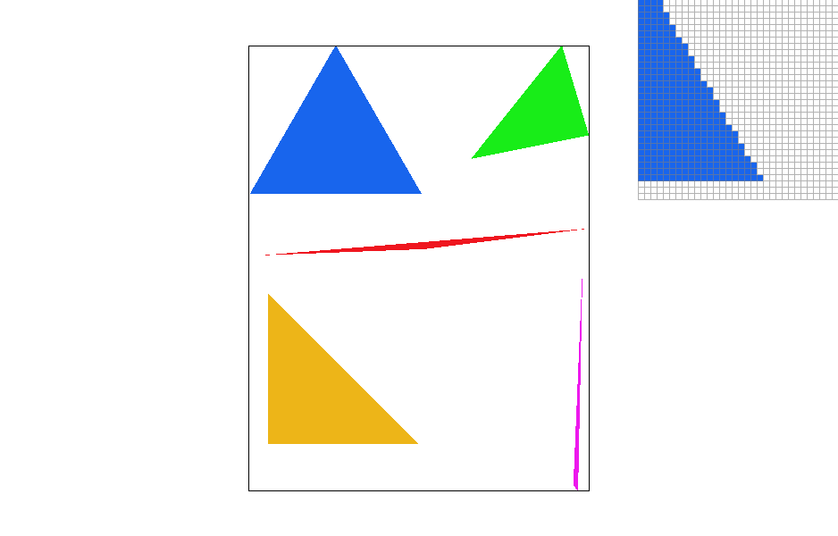

Overview
In this project, I experimented and learned a lot about rasterization and sampling techniques. It was very interesting to be able to apply what I learned in lecture on a project that I could visualize dynamically.
Section I: Rasterization
Part 1: Rasterizing single-color triangles
For task 1, I rasterized triangles using a basic sampling method that tested if the center of every pixel was inside the triangle. I created a bounding box using the min and max of the x and y coordinates of the three triangle points, therefore the algorithm would only check samples that lie within the bounding box of the triangle. Using the three line test described in lecture, I created a helper function that calculated wheter the point was inside the triangle. One bug that I encountered in this step was not accounting for the direction (clockwise or counterclockwise) of the three points, which changes the calculations of the line tests. To fix this, I checked whether the three line calculations were either all >=0 or all <= 0.
As seen in the results below, there was a lot of aliasing and jaggies in the triangles produced, which was expected.
|

|
|
|
|
|
Part 2: Antialiasing triangles
For this part, I implemented a supersampling algorithm to antialias the triangles. This algorithm samples multiple times per pixel in part 1 based on a set sampling rate. For example, for a sampling rate of four, it will sample four times in one pixel by splitting it into a 2x2 grid (sqrt(sampling_rate) X sqrt(sampling_rate)). After rasterization, the color of the pixel in the final result is achieved by taking the average of these four subsamples.
In order to achieve these results and support supersampling, I first resized the sample_buffer (multiplied by sample rate). I then modified the rasterize_triangle function by adding extra for loops to create the subpixels and recalculated the centers and coordinates for each. This method called fill_pixel, which calculated the index to store the color of each subpixel. The resolve_to_framebuffer method averaged the colors of all the subpixels for each pixel to repopulate the framebuffer.
Supersampling is useful because as seen in the results below, it creates smoother lines with the blurred gradient of colors and reduces aliasing/jaggies from part 1.
|
|
|
|
|
Part 3: Transforms
For my robot, I modified the original robot to make its limbs more cubed, changed the color to purple, and positioned its arms in a diagonal way rather than straight across. I achieved this by using rotate and scale for the head, and scale and transform for the limbs. For the color, I changed the HEX codes to purple.

|
|
Section II: Sampling
Part 4: Barycentric coordinates
Barycentric coordinates are a coordinate system for triangles used to interpolate (or proportionally "blend") values at the triangle vertices based on a weighted average. The results are visualized below using colors as the values.
Part 5: "Pixel sampling" for texture mapping
Pixel sampling is a way to map coordinates from a texture.
Nearest pixel sampling takes the nearest pixel coordinate to sample. On the other hand, bilinear pixel sampling takes four of the nearest pixels to the coordinate and linearly interpolates (LERP) with a weighted average.
Part 6: "Level sampling" with mipmaps for texture mapping
Level sampling samples from mipmaps of different levels of downsampled textures.